500 trials per design using identical randomized weather: mean wind 0–5 m/s, direction 0–360°, turbulence intensity 5–20%. Source settings retained: 0.610 m main at apogee + 1 s, 1 m vertical rail, no drogue. No active-control extension is present in either ORK.
| Design | Finished | 95% radius | Inside / finished | Excluded |
|---|---|---|---|---|
| Balius CDR · Canards | 426/500 | 96.6 m | 426/426 (100.0%) | 74 |
| Balius CDR · CO₂ | 500/500 | 68.8 m | 500/500 (100.0%) | 0 |
Terrain-corrected first ground contacts. All percentages and radii use completed simulations only. Methods, results and limitations.
Rotate interactive 3D · Landing coordinates · Summary
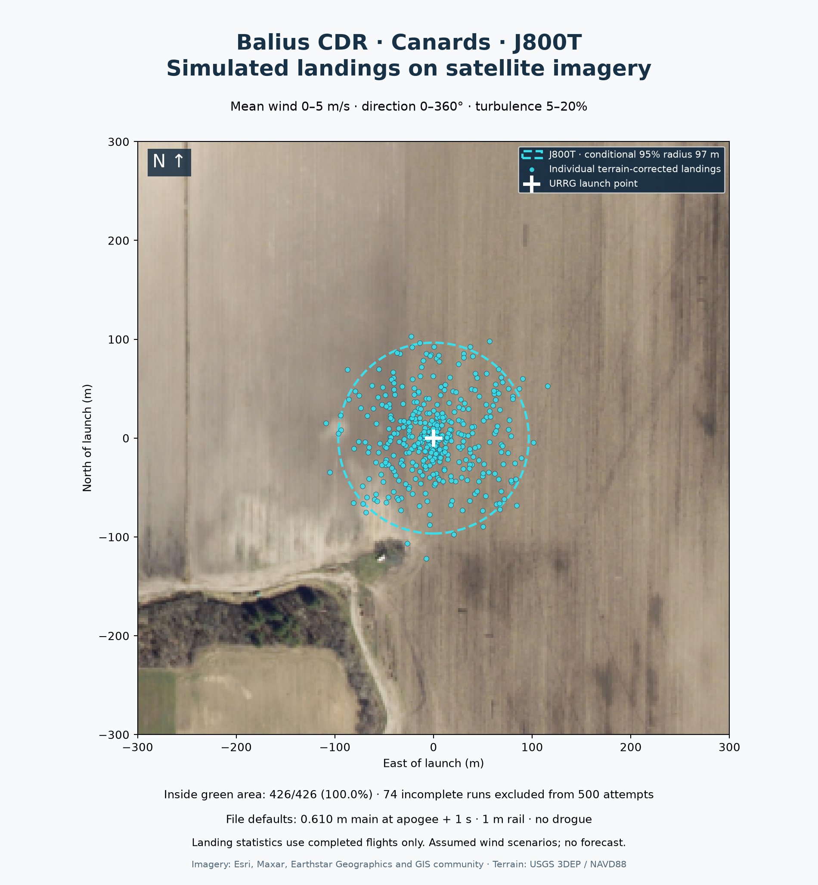
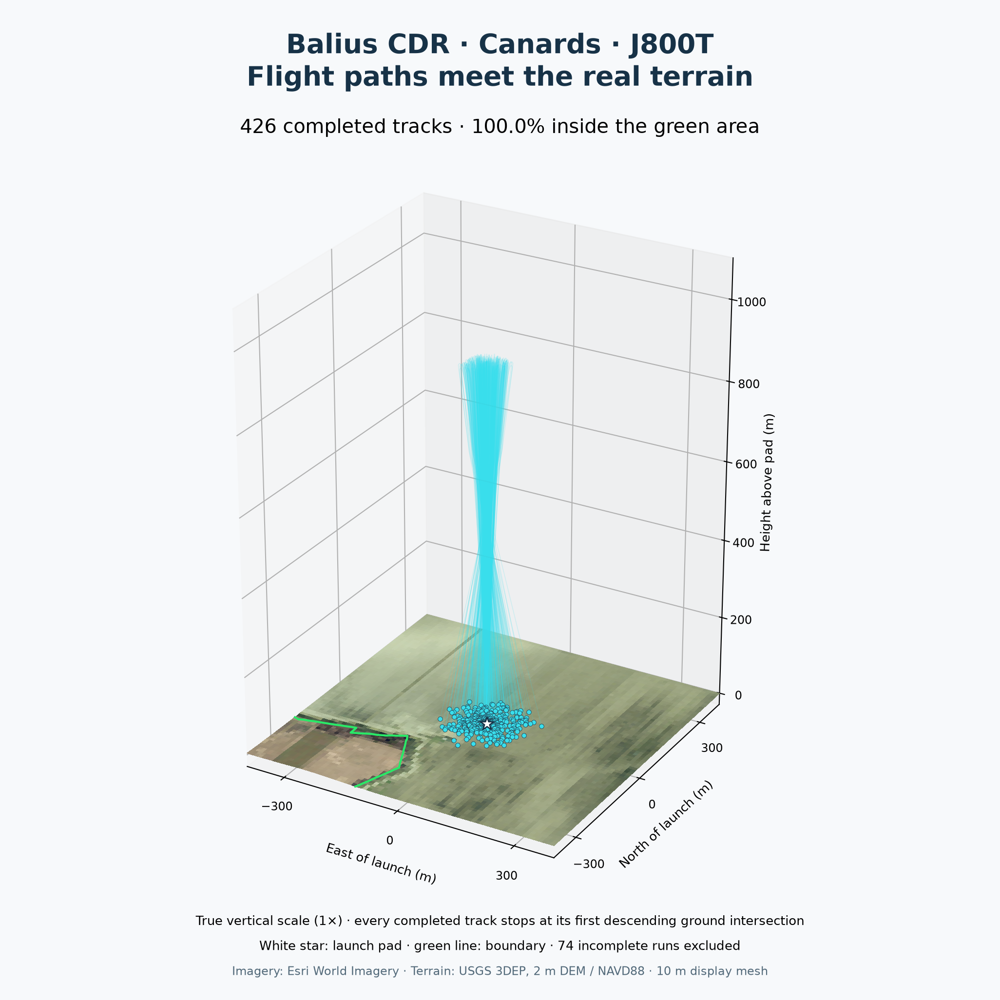
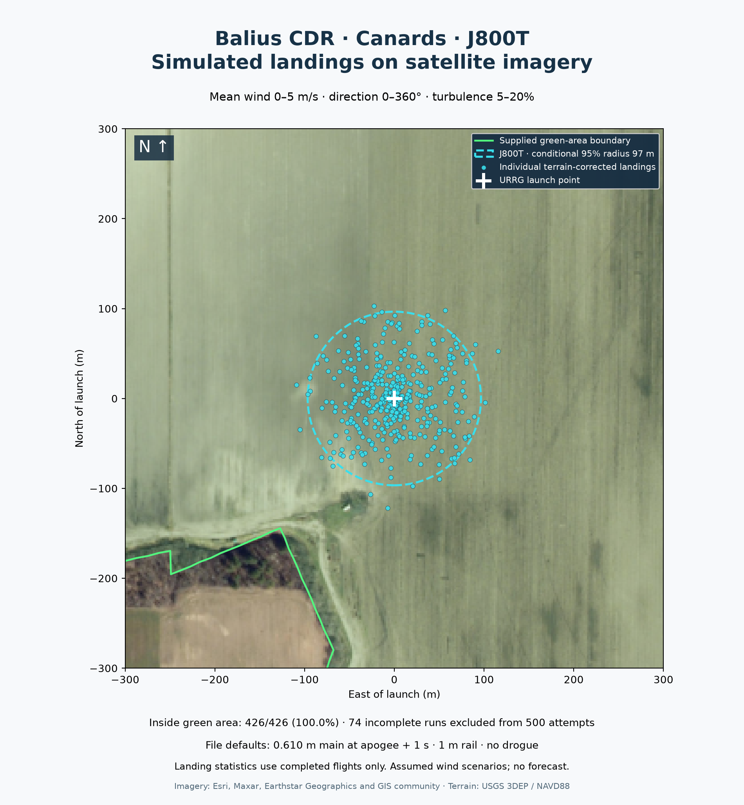
Rotate interactive 3D · Landing coordinates · Summary
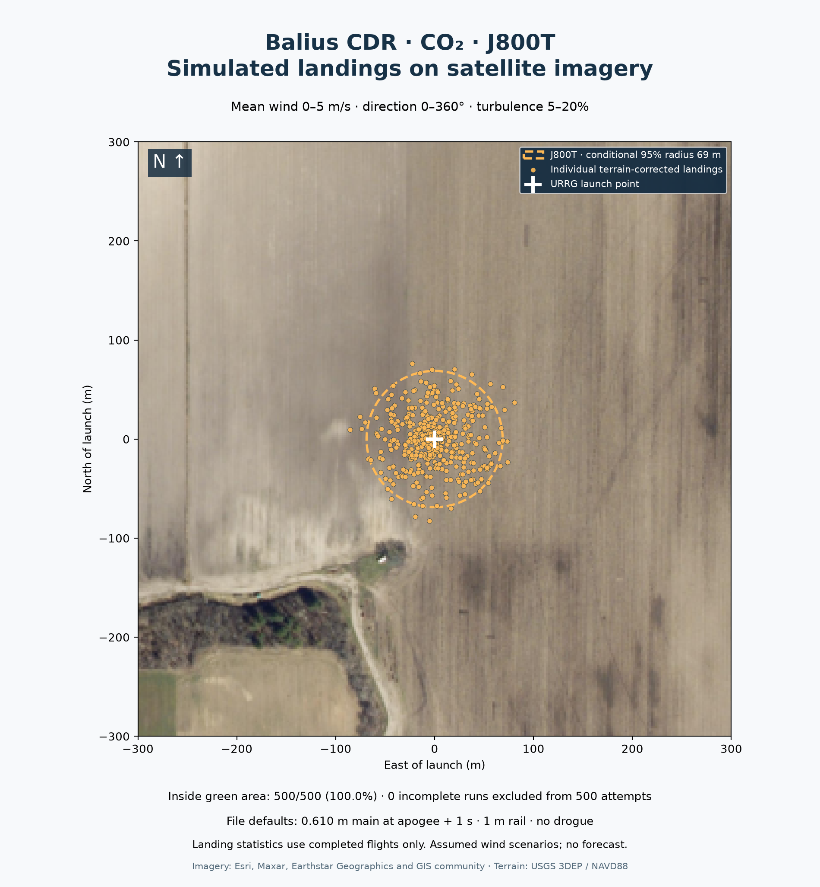
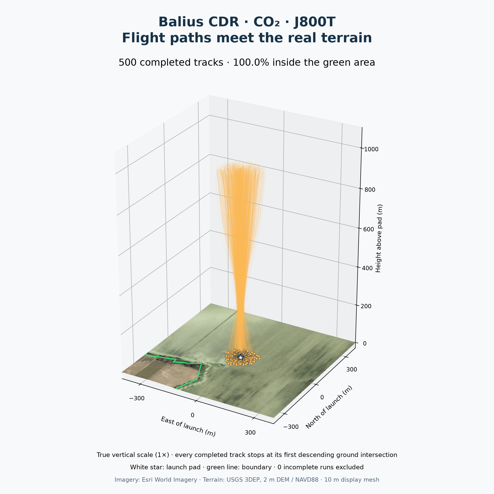
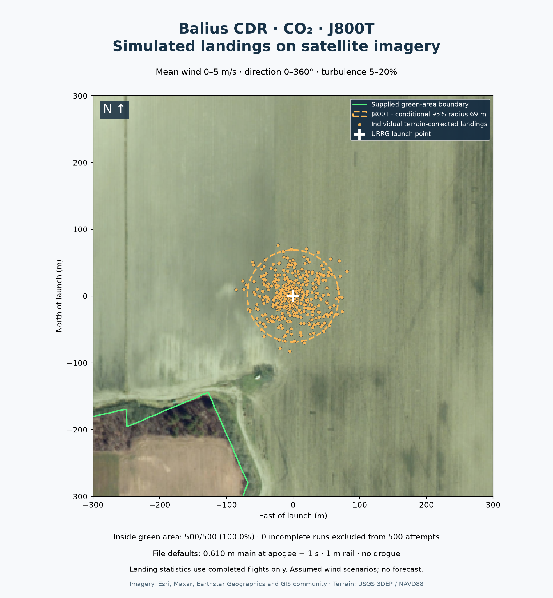
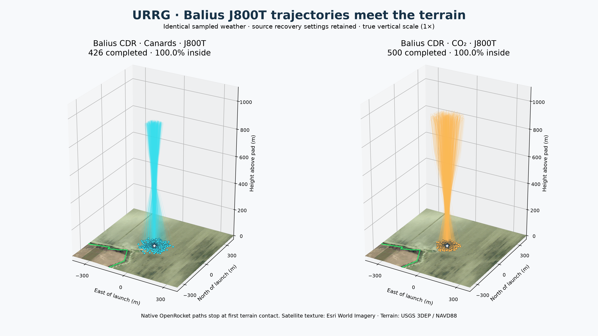
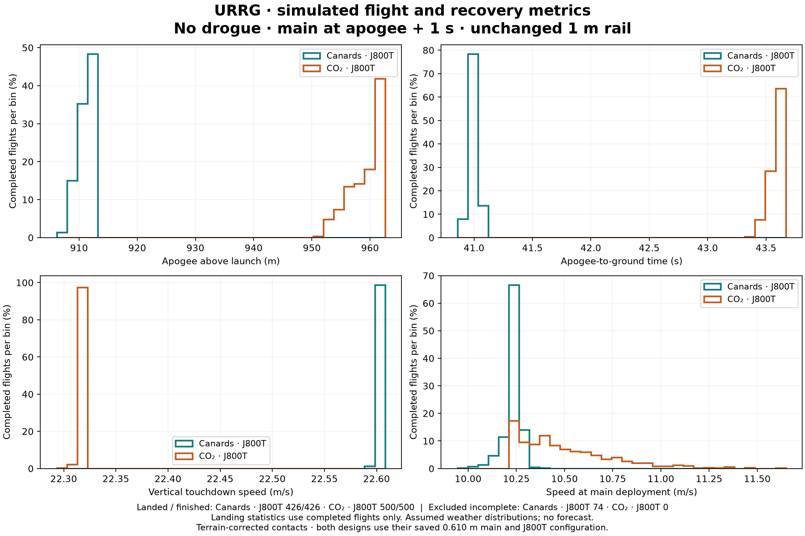
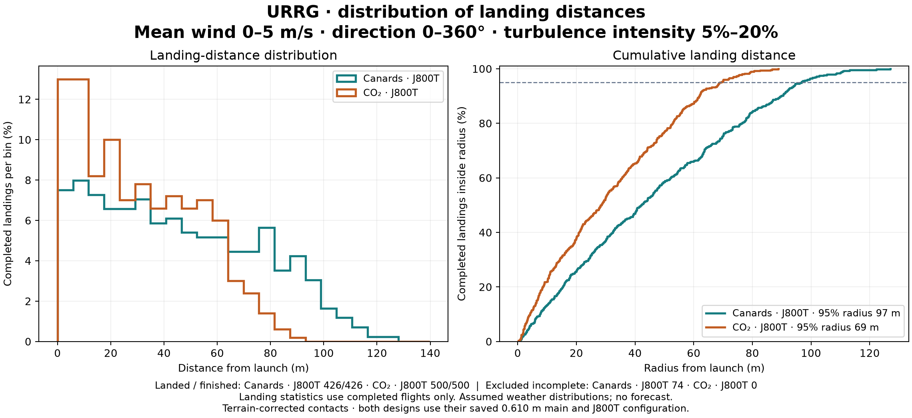
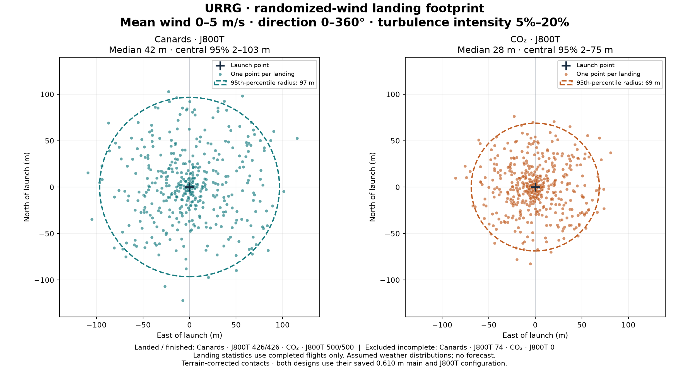
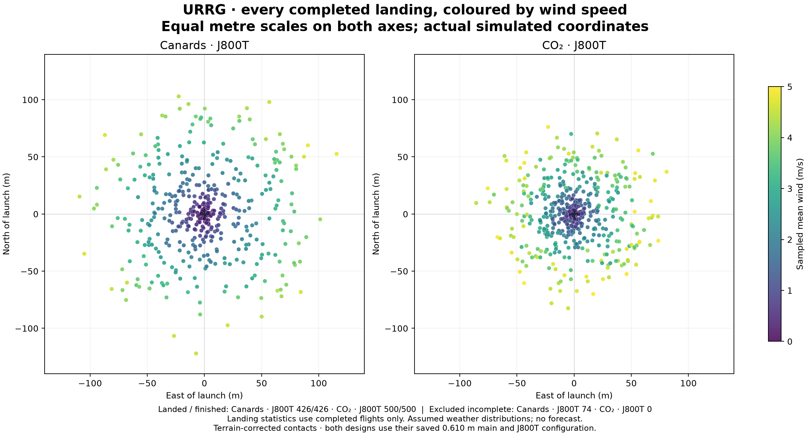
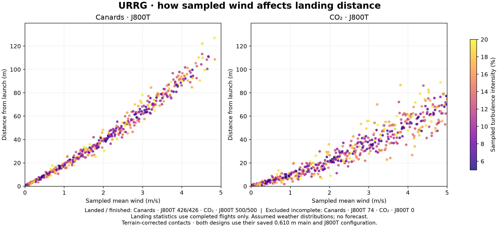
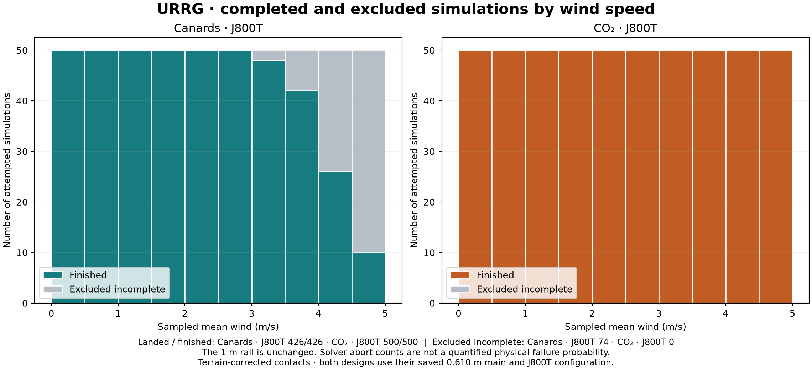
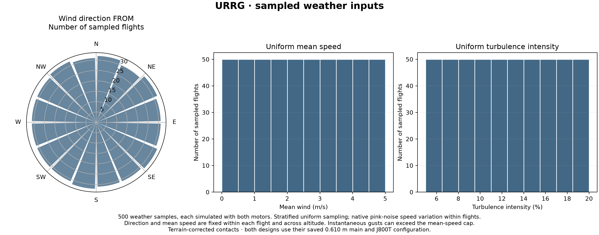